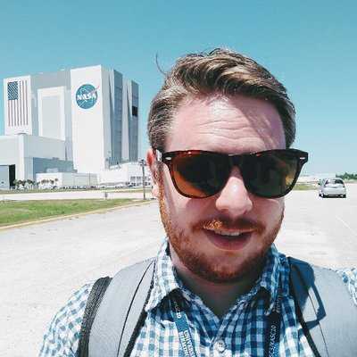

Time Domain Science
I use time-series data from space to learn things about stars, planets and galaxies. I focusing on the discovery and characterization of exoplanet but have also studied stellar oscillations, and galactic transients.
I use time-series data from space to learn things about stars, planets and galaxies. I focusing on the discovery and characterization of exoplanet but have also studied stellar oscillations, and galactic transients.
I enjoy applying novel statistical techniques to data-based problems in astrophysics. Mostly this involves using tools like Gaussian Processes and Markov Chain Monte Carlo.
I use N-body simulations to model the formation and evolution of rocky planets, measure impact rates, and track water delivery. Our Solar System formed one temperate planet that has long-lived oceans. Why did this happen, and are we an anomaly?
I lead a large multiwavelength project to measure the rate and energies of stellar flares with data spanning radio to X-ray. The goal is to determine whether planets around cool stars are good places to search for life
I have worked NASA flight projects since 2011, including pre- and post-launch operations. I am Director of the TESS Science Support Center, and TESS Associate Project Scientist. While based at NASA's Goddard Space Flight Center, I work for the University of Maryland, Baltimore County.
My primary scientific interests lie in the analysis of data from space and ground-based telescopes to infer properties of exoplanets and their host stars. This has led to a number of major discoveries including the detection of the smallest known planet, the detection of the first super-Earth-sized planet orbiting in the habitable zone of a Sun-like star, and the detection of the first Earth-sized planet in the habitable zone of another star.
I grew up in the city of Sheffield in Northern England, UK. My undergraduate studies were performed at the University of Leeds, UK where I obtained a Bachelors degree in Physics with Astrophysics in 2006. My Masters thesis work was performed at the Jodrell Bank Observatory, part of the University of Manchester. I obtained a Master of Science degree in 2007 for work to understand Galactic dust emission. I then moved to Northern Ireland for my doctoral studies where I worked at the Armagh Observatory. I was co-supervised, and was awarded my Ph.D. by, University College London in 2011. I worked on understanding the population of ultra-compact white dwarf binaries.
After my postgraduate studies, I was appointed to the Kepler Guest Observer Office at NASA Ames Research Center, California as a research scientist.
In 2014 I was promoted to Director of the Kepler/K2 Guest Observer Office. My team developed proposal calls, organizing proposal reviews, provide critical support to the scientific community and develops software to enhance output from Kepler and K2 data sets. I was instrumental in the development of the K2 mission that utilized the Kepler spacecraft after the loss of fine pointing control. I served on the science and mission leadership teams for K2
In 2017 I moved to NASA's Goddard Space Flight Center in Greenbelt, Maryland to work on the TESS mission. I initially, served as Deputy Director and then Director of the TESS Guest Investigator Program, and as Associate Project Scientist. I am a member of the Exoplanet Exploration Program Executive Committee.
I've published over 110 refereed papers, on all manner of topics in astrophysics ranging from planets in our solar system to distant supernovae. Below are a list of papers that I've been a part and am especially proud of, or I think are particularly interesting for one reason or another.
We reported the discovery of three terrestrial-sized planets transiting L 98-59, a bright M dwarf at a distance of 10.6 pc. The planets radii range from 0.7 REarth to 1.3 REarth. The planets are prime targets for further follow-up observations including precision radial-velocity mass measurements and future transit spectroscopy with the James Webb Space Telescope. (Kostov, Schlieder, Barclay et al. 2019, AJ)
We presented estimates of how many exoplanets the TESS mission would detect, the physical properties of the detected planets, and the properties of the stars that those planets orbit. In the TESS 2-minute cadence mode we estimated that TESS will find 1250 exoplanets, including 250 smaller than 2 earth-radii. Furthermore, we predicted that an additional 3100 planets would be found in full-frame image data orbiting bright dwarf stars and more than 10,000 around fainter stars. The simulation data are available from Figshare. These simulations seems to have done a pretty good job. (Barclay, Quintana and Pepper, 2018, ApJS)
Planets form via accretion from a remnant disk around a newly formed star. During this process, material in the disk either remains bound to the star as part of either a planet, a smaller celestial body, or makes up part of the the interplanetary medium; falls into the star; or is ejected from the system. We used dynamical models to probe the abundance and properties of ejected material during late-stage planet formation and estimate their contribution to the free-floating planet population. We predicted that the space-borne microlensing search for free-floating planets from the Wide-Field Infra-Red Space Telescope will discover up to 15 Mars-mass planets, but few free-floating Earth-mass planets. (Barclay, Quintana, Raymond and Penny, 2017, ApJ)
This is definitely my favorite planetary systems. We reported the discovery of five transiting planets with sizes between those of Mercury. The host star, Kepler-444 is the densest star with detected solar-like oscillations. We used asteroseismology to directly measure a precise age of 11.2 Gyr for the host star, indicating that Kepler-444 formed when the universe was less than 20% of its current age and making it the oldest known system of terrestrial-size planets. We thus show that Earth-size planets have formed throughout most of the universe's 13.8 billion year history, leaving open the possibility for the existence of ancient life in the Galaxy. (Campante, Barclay, Swift et al., 2015, ApJ)
We presented the detection of Kepler-186f, a 1.1 Earth-radius planet that is the outermost of five planets, all roughly Earth-sized. The intensity and spectrum of the star’s radiation place Kepler-186f in the stellar habitable zone, implying that if Kepler-186f has an Earth-like atmosphere and water at its surface, then some of this water is likely to be in liquid form. This was the first Earth-sized planet in the habitable zone of another . (Quintana, Barclay, Raymond, et al., 2014, Science)
Since the discovery of the first exoplanets, it has been known that other planetary systems can look quite unlike our own. Until fairly recently, we have been able to probe only the upper range of the planet size distribution. Here we reported a planet significantly smaller than Mercury. This tiny planet is the innermost of three that orbit the Sun-like host star, which we have designated Kepler-37. Owing to its extremely small size, similar to that of the Moon, and highly irradiated surface, the planet, Kepler-37b, is probably rocky with no atmosphere or water, similar to Mercury. (Barclay, Rowe, Lissauer, et al., 2013, Nature)
If you're looking to get in touch with me, the best method is email. For most issues you're best contacting me on tom@tombarclay.com. For NASA business (anything about the TESS GI Program, for example) please use my NASA address thomas.barclay@nasa.gov.
Have an astronomy, data science, proposal preparation, anything else project that you'd like someone to consult on? Perhaps I can help. I have a registered sole proprietorship business in Maryland for consulting work. I've done previous work for a lovely company called Under Lucky Stars.